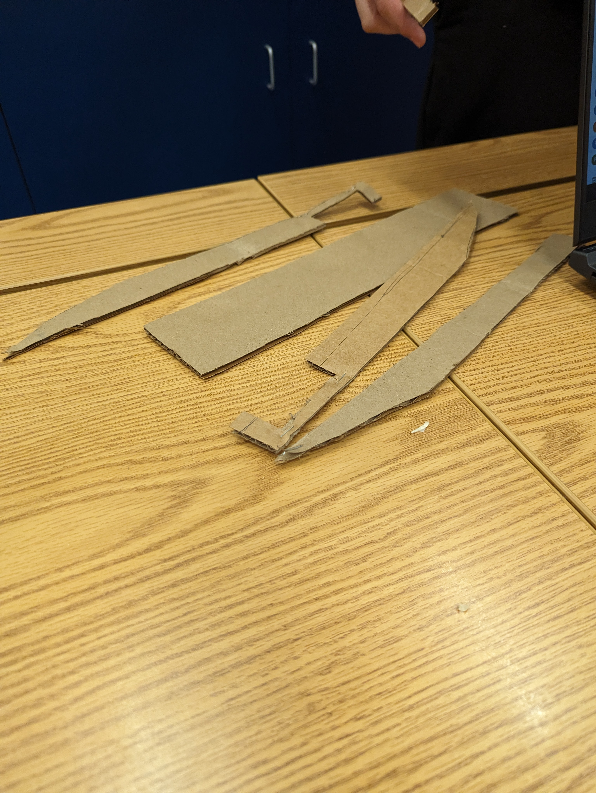
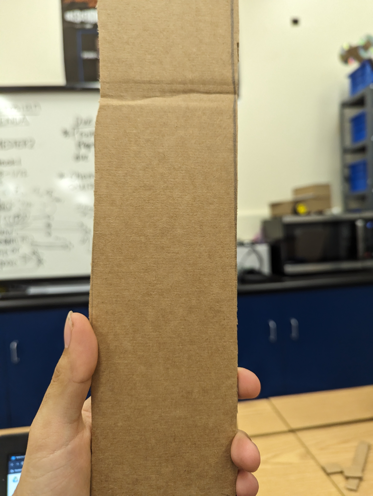
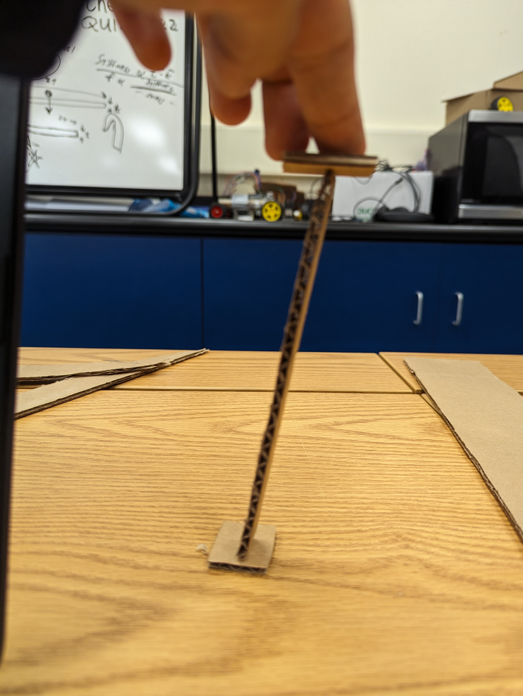

Dj's Website Semester 2
.jpg)
1/19/24- This week we did our oobleck project where we made oobleck. It was very intresting and fun to see not only how oobleck is made, but how it works. The more force that it isimpacted on it, the more it'll harden, but the less force that is applied to it, it'll become more like a liquid. The way we made oobleck was mixing the right amounts of water and cornstartch.
1/26/24- The project me and TrickyNick started this week is the Adruino Car project. In this project, we use TinkerCad to make a model of our car, code our Adruino, and power our Adruino using a breadboard. We so far are in the process of still using the breadboard to get out Adruino up and running.


2/5/24 - Last week, TrickyNick and I worked on our mechanics to get our call moving and rolling using the Adruino. I think we made good progress and did a good job with the help of Mr.Poole. This week our goals are too get started on the body of our car and finalize our mechanics for the car, by friday we should have our mechanics set in stone. Over the weeked I layed in bed, all day, saturday, sunday.
.jpg)
2/13/24 - Last week we worked on the body of our car by cutting out cardboard for the body of our car. We also completed the problems we had with the Adruino of our car. The things we can do better for our car and improve it, is make sure our Adruino doesn't break every 4 seconds.
  